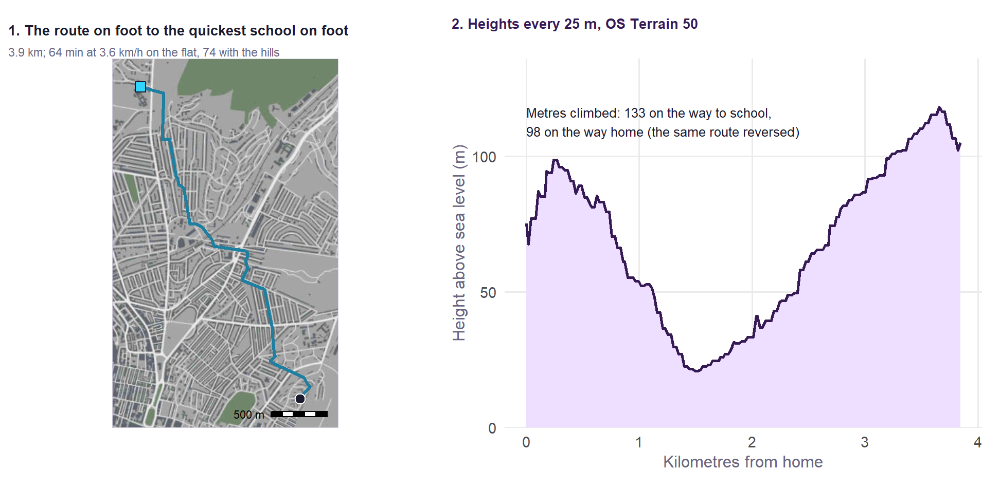
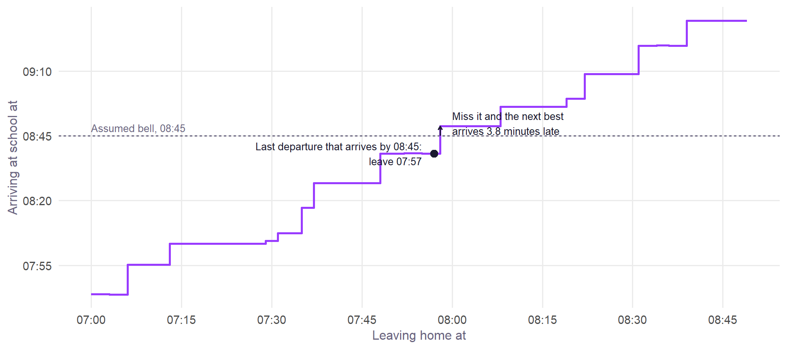
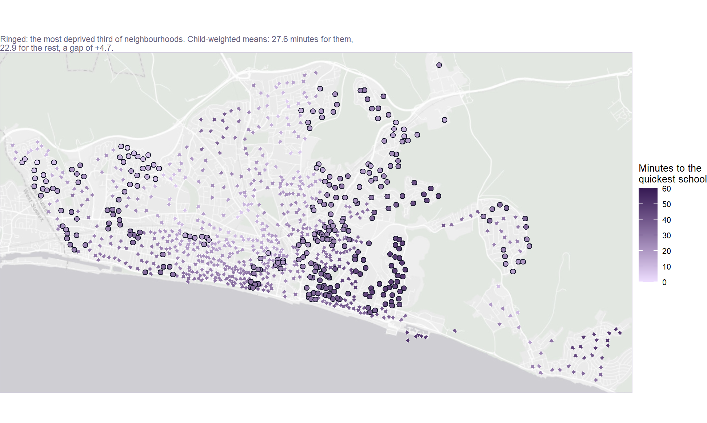
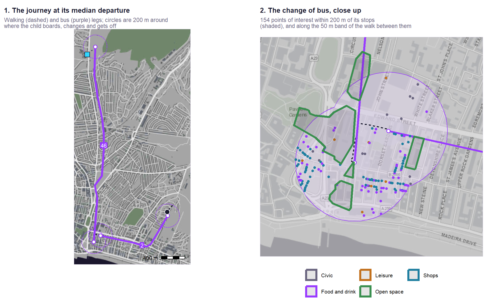

| Term | All pupils | Disadvantaged | Non-disadvantaged | Girls | Boys |
|---|---|---|---|---|---|
| Disadvantage (% FSM6, log) | -0.052 (-24) | +0.027 (7) | -0.016 (-7) | -0.056 (-23) | -0.055 (-20) |
| Absence (log) | -0.230 (-69) | -0.325 (-59) | -0.183 (-54) | -0.225 (-59) | -0.238 (-57) |
| English as an additional language (log) | +0.010 (11) | +0.025 (16) | +0.010 (10) | +0.011 (11) | +0.010 (9) |
| Prior attainment (KS2, centred) | +2.89% (55) | +2.57% (29) | +2.81% (52) | +2.63% (45) | +3.01% (46) |
| Non-selective elsewhere (vs non-selective in a selective area) | +2.70% (5) | +0.29% (0) | +2.78% (5) | +3.04% (5) | +1.64% (2) |
| Selective (vs non-selective in a selective area) | -0.86% (-2) | +19.68% (19) | +1.96% (3) | -0.75% (-1) | +0.32% (0) |
| Neighbourhood education (SD) | +2.44% (22) | +0.82% (5) | +2.58% (23) | +2.28% (19) | +2.83% (21) |
| SEN support % | -0.19% (-13) | -0.11% (-4) | -0.16% (-11) | -0.21% (-13) | -0.15% (-8) |
| SEN with EHCP % | -0.19% (-4) | -0.44% (-6) | -0.13% (-3) | -0.26% (-5) | -0.15% (-3) |
| Pupil mobility % | -0.49% (-25) | -0.57% (-17) | -0.45% (-21) | -0.55% (-24) | -0.49% (-20) |
| Girls' school | +4.94% (17) | +7.64% (15) | +4.54% (15) | +1.62% (5) | |
| 11-16 school | +1.08% (7) | +1.28% (5) | +1.21% (7) | +1.14% (6) | +1.06% (5) |
| Boys' school | +1.40% (3) |
Methodology – Value Added v2.1
The specification, the model for each pupil group, how it compares with the published measure, and how the figures built on it are made.
NoteIn one line
Value added v2.1 is each school’s Attainment 8 above or below what a multilevel model expects from its intake and context, measured against England, for five groups of pupils, 2021/22 to 2024/25.
What changed from v1
v2.0 adopted every recommendation of the review; v2.1 adds one term, whether a school stops at 16 (below):
| v1 (published) | v2.1 | |
|---|---|---|
| School stops at 16 (no sixth form) | No | Yes (new in v2.1): 11–16 schools score ~1% higher from structure alone |
| Ofsted grade in the expectation | Yes (random effect) | No: it is judged partly on the same results |
| Teacher retention, leadership pay, sickness | Yes | No: partly in a school’s own hands |
| LA segregation | Yes | No: added nothing |
| Pupil mobility | No | Yes |
| Single-sex school | No | Yes: girls’ schools gained ~5% from intake alone |
| SEN support and EHCP rates | No | Yes |
| Neighbourhood education (% level 4+, 150 nearest output areas) | No | Yes |
| Measured against | Schools in the same local authority | England, with the within-authority view kept beside it |
| Estimate | Mean residual | Mean residual, shrunk by its reliability, with a 95% interval |
| Pupil groups | All, disadvantaged, non-disadvantaged | + girls and boys |
| Schools not mainly taking GCSEs | Included | Left out, school-year by school-year, and listed (below) |
Kept from v1: the construction (a school-level residual of a model of log Attainment 8), prior attainment, absence, disadvantage, EAL and selective admissions, and random intercepts for year and for region and local authority.
The model
\[\log(\text{Att8}) = \beta\,\text{intake and context} + u_\text{year} + u_\text{region} + u_\text{LA} + e\]
Value added for a school-year is observed Attainment 8 minus \(\exp(\hat y)\,e^{\sigma^2/2}\). Against England, \(\hat y\) carries only the year effect; within the authority it carries every random effect. A school’s value added is the mean over its years, shrunk towards zero by its reliability, \(\tau^2 / (\tau^2 + \sigma^2 / n)\), where \(\tau^2\) is the persistent between-school variance (from a fit with a school random intercept) and \(n\) its number of years. The full specification, with every coefficient, variance and fit statistic for each group, is below.
| Group | School-years | Schools | Mean Att 8 | Marginal R² | Conditional R² | School SD (vs England) | Residual SD | Reliability, 4 years |
|---|---|---|---|---|---|---|---|---|
| All pupils | 12,839 | 3,265 | 47.5 | 0.81 | 0.87 | 0.064 | 0.072 | 0.88 |
| Disadvantaged | 12,701 | 3,254 | 38.4 | 0.64 | 0.73 | 0.084 | 0.117 | 0.76 |
| Non-disadvantaged | 12,701 | 3,254 | 50.3 | 0.74 | 0.81 | 0.062 | 0.072 | 0.87 |
| Girls | 12,186 | 3,109 | 48.6 | 0.75 | 0.82 | 0.061 | 0.078 | 0.82 |
| Boys | 11,988 | 3,056 | 45.0 | 0.75 | 0.81 | 0.067 | 0.085 | 0.82 |
Every term is intake or context. The largest are prior attainment and absence, as in v1. The new terms all matter: each percentage point of mobile pupils costs 0.5% of Attainment 8, a standard deviation of neighbourhood education is worth +2.4% for all pupils and +2.6% for non-disadvantaged pupils but only +0.8% for disadvantaged pupils, and a girls’ school +4.9%. Four years of value added are reliable for every group, from 0.76 for disadvantaged pupils to 0.88 for all pupils.
What matters most
Two ways of asking which terms matter most, side by side. Strength and direction is each term’s effect on expected Attainment 8: for a measure, a move of one standard deviation across England’s schools; for a yes-or-no, the difference between yes and no. Green raises attainment, purple lowers it, and the bars are 95% intervals. Importance splits the variation in Attainment 8 the intake terms explain between them by a Shapley decomposition: each term’s average gain in explained variance over every order in which the terms could be added, so variation two terms share (prior attainment, absence and disadvantage share a great deal) is credited fairly between them rather than to whichever comes first. It is computed by ordinary least squares with the year in every model; the intake terms explain 82% of the variation in log Attainment 8 beyond the year.


Prior attainment and absence lead on both counts: 26% and 24% of what the intake explains for all pupils, then disadvantage at 14%. For disadvantaged pupils absence comes first. The two views can disagree, and the difference is worth reading: a term with a large effect but little spread across schools (single-sex schools) explains little variation, and one that moves with others shares its credit. Neither is a causal ranking.
The full v2.1 specification, group by group
For school \(i\) in local authority \(l\), region \(r\) and year \(t\), and for each pupil group \(g\) (all, disadvantaged, non-disadvantaged, girls, boys) separately:
\[ \begin{aligned} \log(\text{Att8}^{g}_{it}) = \;& \beta_0 + \beta_1 \log(\text{FSM6}_{it}) + \beta_2 \log(\text{absence}_{it}) + \beta_3 \log(\text{EAL}_{it}) + \beta_4\, \text{KS2}_{it} \\ &+ \beta_5\, \text{selective}_{i} + \beta_6\, \text{non-selective elsewhere}_{i} + \beta_7\, \text{neighbourhood}_{i} \\ &+ \beta_8\, \text{SEN support}_{it} + \beta_9\, \text{EHCP}_{it} + \beta_{10}\, \text{mobility}_{it} + \beta_{11}\, \text{single-sex}_{i} + \beta_{12}\, \text{11--16}_{i} \\ &+ u_t + v_r + w_{l(r)} + e_{it} \end{aligned} \]
\[u_t \sim N(0, \sigma^2_\text{year}), \quad v_r \sim N(0, \sigma^2_\text{region}), \quad w_{l(r)} \sim N(0, \sigma^2_\text{LA}), \quad e_{it} \sim N(0, \sigma^2)\]
FSM6 is the share of the KS4 cohort disadvantaged; absence the overall absence rate; EAL the share with English as an additional language; KS2 the cohort’s mean KS2 scaled score less 100; admissions are relative to a non-selective school in a highly selective area; neighbourhood is the share of adults qualified to level 4+ in the 150 nearest Census output areas, standardised; SEN support, EHCP and mobility are percentages of pupils; single-sex is a girls’ school (for boys, a boys’ school); 11–16 is a school that stops at 16. Local authorities are nested in regions. Fitted by restricted maximum likelihood in lme4 (R/02_fit_va.R); log-likelihood, AIC and BIC are from the maximum-likelihood refit. R² is Nakagawa’s: marginal for the fixed effects alone, conditional with the random effects too.
| Term | Unit | Estimate | SE | t | Effect on Attainment 8 (95% interval) |
|---|---|---|---|---|---|
| Intercept | +4.3773 | 0.0227 | 193.1 | ||
| Disadvantage (% FSM6, log) | elasticity | -0.0518 | 0.0021 | -24.1 | -0.052% per 1% |
| Absence (log) | elasticity | -0.2304 | 0.0033 | -69.3 | -0.230% per 1% |
| English as an additional language (log) | elasticity | +0.0103 | 0.0009 | 11.2 | +0.010% per 1% |
| Prior attainment (KS2, centred) | per scaled-score point | +0.0284 | 0.0005 | 54.8 | +2.89% (+2.78 to +2.99) |
| Non-selective elsewhere (vs non-selective in a selective area) | yes vs no | +0.0266 | 0.0054 | 4.9 | +2.70% (+1.61 to +3.80) |
| Selective (vs non-selective in a selective area) | yes vs no | -0.0086 | 0.0057 | -1.5 | -0.86% (-1.95 to +0.25) |
| Neighbourhood education (SD) | per SD | +0.0241 | 0.0011 | 22.4 | +2.44% (+2.22 to +2.66) |
| SEN support % | per percentage point | -0.0019 | 0.0001 | -12.7 | -0.19% (-0.21 to -0.16) |
| SEN with EHCP % | per percentage point | -0.0019 | 0.0005 | -4.1 | -0.19% (-0.27 to -0.10) |
| Pupil mobility % | per percentage point | -0.0049 | 0.0002 | -25.0 | -0.49% (-0.53 to -0.45) |
| Girls’ school | yes vs no | +0.0482 | 0.0029 | 16.6 | +4.94% (+4.34 to +5.54) |
| 11-16 school | yes vs no | +0.0107 | 0.0016 | 6.5 | +1.08% (+0.75 to +1.40) |
| Level | Variance | SD | Share of variance |
|---|---|---|---|
| Local authority (within region) | 0.00059 | 0.0243 | 8.0% |
| Region | 0.00021 | 0.0145 | 2.9% |
| Year | 0.00144 | 0.0379 | 19.6% |
| Residual (school-year) | 0.00511 | 0.0715 | 69.5% |
| Measure | Value |
|---|---|
| School-years | 12,839 |
| Schools | 3,265 |
| Local authorities | 152 |
| Regions | 9 |
| Years | 4 |
| Log-likelihood (ML) | 15470.0 |
| AIC | -30906.0 |
| BIC | -30779.2 |
| Marginal R² | 0.807 |
| Conditional R² | 0.866 |
| Residual SD (log scale) | 0.0715 |
| Persistent school SD, against England | 0.0637 |
| Reliability of a four-year figure | 0.88 |
| Term | Unit | Estimate | SE | t | Effect on Attainment 8 (95% interval) |
|---|---|---|---|---|---|
| Intercept | +4.1054 | 0.0330 | 124.5 | ||
| Disadvantage (% FSM6, log) | elasticity | +0.0265 | 0.0038 | 7.0 | +0.027% per 1% |
| Absence (log) | elasticity | -0.3249 | 0.0055 | -59.0 | -0.325% per 1% |
| English as an additional language (log) | elasticity | +0.0248 | 0.0015 | 16.5 | +0.025% per 1% |
| Prior attainment (KS2, centred) | per scaled-score point | +0.0254 | 0.0009 | 29.2 | +2.57% (+2.40 to +2.75) |
| Non-selective elsewhere (vs non-selective in a selective area) | yes vs no | +0.0029 | 0.0091 | 0.3 | +0.29% (-1.49 to +2.10) |
| Selective (vs non-selective in a selective area) | yes vs no | +0.1797 | 0.0095 | 19.0 | +19.68% (+17.48 to +21.93) |
| Neighbourhood education (SD) | per SD | +0.0082 | 0.0018 | 4.6 | +0.82% (+0.47 to +1.17) |
| SEN support % | per percentage point | -0.0011 | 0.0002 | -4.4 | -0.11% (-0.15 to -0.06) |
| SEN with EHCP % | per percentage point | -0.0044 | 0.0007 | -5.9 | -0.44% (-0.58 to -0.29) |
| Pupil mobility % | per percentage point | -0.0057 | 0.0003 | -16.9 | -0.57% (-0.64 to -0.50) |
| Girls’ school | yes vs no | +0.0736 | 0.0049 | 15.0 | +7.64% (+6.61 to +8.68) |
| 11-16 school | yes vs no | +0.0127 | 0.0027 | 4.7 | +1.28% (+0.74 to +1.81) |
| Level | Variance | SD | Share of variance |
|---|---|---|---|
| Local authority (within region) | 0.00136 | 0.0369 | 7.4% |
| Region | 0.00070 | 0.0264 | 3.8% |
| Year | 0.00257 | 0.0507 | 14.0% |
| Residual (school-year) | 0.01370 | 0.1170 | 74.7% |
| Measure | Value |
|---|---|
| School-years | 12,701 |
| Schools | 3,254 |
| Local authorities | 151 |
| Regions | 9 |
| Years | 4 |
| Log-likelihood (ML) | 9054.5 |
| AIC | -18074.9 |
| BIC | -17948.3 |
| Marginal R² | 0.642 |
| Conditional R² | 0.733 |
| Residual SD (log scale) | 0.1170 |
| Persistent school SD, against England | 0.0838 |
| Reliability of a four-year figure | 0.76 |
| Term | Unit | Estimate | SE | t | Effect on Attainment 8 (95% interval) |
|---|---|---|---|---|---|
| Intercept | +4.2275 | 0.0214 | 197.5 | ||
| Disadvantage (% FSM6, log) | elasticity | -0.0163 | 0.0023 | -6.9 | -0.016% per 1% |
| Absence (log) | elasticity | -0.1831 | 0.0034 | -53.9 | -0.183% per 1% |
| English as an additional language (log) | elasticity | +0.0096 | 0.0009 | 10.3 | +0.010% per 1% |
| Prior attainment (KS2, centred) | per scaled-score point | +0.0277 | 0.0005 | 51.5 | +2.81% (+2.70 to +2.92) |
| Non-selective elsewhere (vs non-selective in a selective area) | yes vs no | +0.0274 | 0.0057 | 4.8 | +2.78% (+1.64 to +3.93) |
| Selective (vs non-selective in a selective area) | yes vs no | +0.0194 | 0.0059 | 3.3 | +1.96% (+0.79 to +3.13) |
| Neighbourhood education (SD) | per SD | +0.0255 | 0.0011 | 23.3 | +2.58% (+2.36 to +2.80) |
| SEN support % | per percentage point | -0.0016 | 0.0001 | -10.7 | -0.16% (-0.19 to -0.13) |
| SEN with EHCP % | per percentage point | -0.0013 | 0.0005 | -2.9 | -0.13% (-0.22 to -0.04) |
| Pupil mobility % | per percentage point | -0.0045 | 0.0002 | -21.5 | -0.45% (-0.49 to -0.41) |
| Girls’ school | yes vs no | +0.0444 | 0.0030 | 14.7 | +4.54% (+3.92 to +5.16) |
| 11-16 school | yes vs no | +0.0120 | 0.0017 | 7.2 | +1.21% (+0.88 to +1.54) |
| Level | Variance | SD | Share of variance |
|---|---|---|---|
| Local authority (within region) | 0.00056 | 0.0236 | 7.7% |
| Region | 0.00026 | 0.0160 | 3.6% |
| Year | 0.00115 | 0.0339 | 16.0% |
| Residual (school-year) | 0.00522 | 0.0723 | 72.7% |
| Measure | Value |
|---|---|
| School-years | 12,701 |
| Schools | 3,254 |
| Local authorities | 151 |
| Regions | 9 |
| Years | 4 |
| Log-likelihood (ML) | 15174.9 |
| AIC | -30315.8 |
| BIC | -30189.1 |
| Marginal R² | 0.742 |
| Conditional R² | 0.812 |
| Residual SD (log scale) | 0.0723 |
| Persistent school SD, against England | 0.0623 |
| Reliability of a four-year figure | 0.87 |
| Term | Unit | Estimate | SE | t | Effect on Attainment 8 (95% interval) |
|---|---|---|---|---|---|
| Intercept | +4.4305 | 0.0244 | 181.5 | ||
| Disadvantage (% FSM6, log) | elasticity | -0.0557 | 0.0024 | -22.8 | -0.056% per 1% |
| Absence (log) | elasticity | -0.2255 | 0.0038 | -59.5 | -0.225% per 1% |
| English as an additional language (log) | elasticity | +0.0108 | 0.0010 | 10.7 | +0.011% per 1% |
| Prior attainment (KS2, centred) | per scaled-score point | +0.0260 | 0.0006 | 44.6 | +2.63% (+2.51 to +2.75) |
| Non-selective elsewhere (vs non-selective in a selective area) | yes vs no | +0.0300 | 0.0064 | 4.7 | +3.04% (+1.75 to +4.35) |
| Selective (vs non-selective in a selective area) | yes vs no | -0.0075 | 0.0069 | -1.1 | -0.75% (-2.08 to +0.60) |
| Neighbourhood education (SD) | per SD | +0.0225 | 0.0012 | 18.9 | +2.28% (+2.04 to +2.52) |
| SEN support % | per percentage point | -0.0021 | 0.0002 | -12.9 | -0.21% (-0.24 to -0.18) |
| SEN with EHCP % | per percentage point | -0.0026 | 0.0005 | -5.1 | -0.26% (-0.36 to -0.16) |
| Pupil mobility % | per percentage point | -0.0055 | 0.0002 | -24.1 | -0.55% (-0.59 to -0.51) |
| Girls’ school | yes vs no | +0.0160 | 0.0034 | 4.8 | +1.62% (+0.95 to +2.29) |
| 11-16 school | yes vs no | +0.0113 | 0.0018 | 6.2 | +1.14% (+0.78 to +1.50) |
| Level | Variance | SD | Share of variance |
|---|---|---|---|
| Local authority (within region) | 0.00060 | 0.0245 | 7.1% |
| Region | 0.00018 | 0.0133 | 2.1% |
| Year | 0.00164 | 0.0405 | 19.3% |
| Residual (school-year) | 0.00607 | 0.0779 | 71.5% |
| Measure | Value |
|---|---|
| School-years | 12,186 |
| Schools | 3,109 |
| Local authorities | 152 |
| Regions | 9 |
| Years | 4 |
| Log-likelihood (ML) | 13643.2 |
| AIC | -27252.3 |
| BIC | -27126.4 |
| Marginal R² | 0.750 |
| Conditional R² | 0.821 |
| Residual SD (log scale) | 0.0779 |
| Persistent school SD, against England | 0.0609 |
| Reliability of a four-year figure | 0.82 |
| Term | Unit | Estimate | SE | t | Effect on Attainment 8 (95% interval) |
|---|---|---|---|---|---|
| Intercept | +4.3657 | 0.0235 | 186.1 | ||
| Disadvantage (% FSM6, log) | elasticity | -0.0552 | 0.0027 | -20.1 | -0.055% per 1% |
| Absence (log) | elasticity | -0.2377 | 0.0042 | -56.8 | -0.238% per 1% |
| English as an additional language (log) | elasticity | +0.0098 | 0.0011 | 8.9 | +0.010% per 1% |
| Prior attainment (KS2, centred) | per scaled-score point | +0.0296 | 0.0006 | 46.1 | +3.01% (+2.88 to +3.14) |
| Non-selective elsewhere (vs non-selective in a selective area) | yes vs no | +0.0163 | 0.0070 | 2.3 | +1.64% (+0.25 to +3.06) |
| Selective (vs non-selective in a selective area) | yes vs no | +0.0032 | 0.0077 | 0.4 | +0.32% (-1.18 to +1.85) |
| Neighbourhood education (SD) | per SD | +0.0279 | 0.0013 | 21.1 | +2.83% (+2.56 to +3.10) |
| SEN support % | per percentage point | -0.0015 | 0.0002 | -8.3 | -0.15% (-0.18 to -0.11) |
| SEN with EHCP % | per percentage point | -0.0015 | 0.0005 | -2.8 | -0.15% (-0.26 to -0.05) |
| Pupil mobility % | per percentage point | -0.0049 | 0.0003 | -19.6 | -0.49% (-0.54 to -0.44) |
| Boys’ school | yes vs no | +0.0139 | 0.0043 | 3.2 | +1.40% (+0.54 to +2.26) |
| 11-16 school | yes vs no | +0.0105 | 0.0020 | 5.3 | +1.06% (+0.67 to +1.46) |
| Level | Variance | SD | Share of variance |
|---|---|---|---|
| Local authority (within region) | 0.00068 | 0.0261 | 7.2% |
| Region | 0.00027 | 0.0165 | 2.9% |
| Year | 0.00127 | 0.0357 | 13.4% |
| Residual (school-year) | 0.00726 | 0.0852 | 76.5% |
| Measure | Value |
|---|---|
| School-years | 11,988 |
| Schools | 3,056 |
| Local authorities | 152 |
| Regions | 9 |
| Years | 4 |
| Log-likelihood (ML) | 12347.4 |
| AIC | -24660.8 |
| BIC | -24535.1 |
| Marginal R² | 0.755 |
| Conditional R² | 0.812 |
| Residual SD (log scale) | 0.0852 |
| Persistent school SD, against England | 0.0671 |
| Reliability of a four-year figure | 0.82 |
The same, as pictures: each term’s effect on expected Attainment 8 with its 95% interval, on a common scale (a standard deviation for a measure, yes against no for a flag), and how closely the fitted values follow the observed ones, school-year by school-year.


Shrinkage, and what the four-year figure is
A school’s headline figure is not the plain mean of its yearly value added. It is an empirical Bayes estimate: that mean pulled towards zero by as much of it as the evidence will carry. The weight it keeps is its reliability,
\[\lambda = \frac{\tau^2}{\tau^2 + \sigma^2/n}\]
with \(\sigma^2\) the year-to-year variance within a school, \(\tau^2\) the persistent variance between schools, and \(n\) the school’s own number of years — not four. Both variances come from the second fit, the one carrying a school random intercept, so \(\sigma^2\) is what is left once a school’s own level is accounted for.
A school with a long record keeps nearly all of its mean. A school with two years keeps less, because on that much evidence most of its distance from the average is sampling noise. Reliability depends only on \(n\) and the group’s two variances, so every school in a group with the same number of years carries the same weight.
| Years of data | Schools | Reliability (lambda) |
|---|---|---|
| 1 | 3 | 0.66 |
| 2 | 53 | 0.79 |
| 3 | 125 | 0.85 |
| 4 | 3,076 | 0.88 |
| 5 | 4 | 0.91 |
| 7 | 1 | 0.93 |
| 8 | 3 | 0.94 |
What is Bayesian here, and what is not
\(\lambda\bar r\) is exactly the posterior mean of a school’s effect under a normal prior centred on zero with variance \(\tau^2\). The arithmetic is Bayesian; the prior is not chosen. \(\tau^2\) and \(\sigma^2\) are estimated by REML from the same data the shrinkage is then applied to, which makes this empirical Bayes rather than Bayes. There is no hyperprior, no sampling and nothing to converge: the posterior is Gaussian and closed form.
The price is that the intervals treat \(\tau^2\) and \(\sigma^2\) as known. They carry the uncertainty in a school’s own mean, not the uncertainty in the variances used to shrink it, so they are a little tighter than a fully Bayesian treatment would give — most so for the groups with the fewest schools.
Two variances, because there are two questions
Against England, a school is credited with everything that separates it from the national picture, its authority and its region included. The prior variance for that comparison is therefore all three persistent components together:
\[\tau^2_\text{England} = \tau^2_\text{school} + \tau^2_\text{LA} + \tau^2_\text{region}\]
Within the authority, the authority and region effects are already in the prediction and are not the school’s to own, so the prior variance is the school component alone. The national figure is the less shrunk of the two: there is more real variation there for it to be variation of. For all pupils that is \(\tau_\text{England} = 0.064\) against \(\tau_\text{school} = 0.059\) on the log scale.
Back to Attainment 8 points
Shrinkage happens on the log scale, where the model is additive. The shrunken effect is converted against the school’s own mean expected Attainment 8:
\[\text{value added} = \text{base}\left(e^{\lambda\bar r} - 1\right)\]
and its 95% interval the same way, from \(\lambda\bar r \pm 1.96\sqrt{\lambda\sigma^2/n}\). A school counts as significant where that interval excludes zero.
This is a different quantity from the plain four-year mean sitting beside it in the tables: that one averages observed minus expected in points, while this one shrinks a mean log residual and then converts it. For most schools the two are close. For schools with short records or unusual intakes they are not, and the shrunken figure is the one to read.
How v2.1 compares with v1

| Group | Schools | r, v2 against England | r, v2 within the LA | Schools changing quintile |
|---|---|---|---|---|
| All pupils | 3,235 | 0.75 | 0.82 | 57% |
| Disadvantaged | 3,235 | 0.78 | 0.89 | 52% |
| Non-disadvantaged | 3,235 | 0.77 | 0.85 | 56% |
The two measures agree broadly but not closely: 57% of schools fall in a different quintile on v2.1 for all pupils. Measured within the authority, as v1 was, the correlation is 0.82. The remaining difference is the specification: the Ofsted grade and workforce terms coming out, and the new intake terms going in. The review sets out how much each change contributes.
Girls and boys

Girls’ and boys’ value added correlate 0.78 across the 2,901 schools with both. In 181 schools the two differ by more than three points. The girls’ and boys’ models use the same intake terms, measured for the whole school; the DfE publishes Attainment 8 by sex but not intake by sex, so a school’s intake of girls and of boys is assumed alike.
Local authorities

The authority effect is reported here, beside value added, rather than inside it: value added against England includes whatever the authority contributes. The within-authority value added (as v1) is kept in the data for anyone who wants it.
Schools and years left out
Attainment 8 only measures a school fairly if its pupils take the qualifications it counts. A school-year is left out of every v2.1 model, and so has no value added for that year, when either:
- its pupils averaged fewer than three GCSE entries, so the school does not mainly take GCSEs (England’s median is about seven). UTCs and studio schools that take technical qualifications counting towards Attainment 8 sit well above this line; or
- fewer than half of its pupils achieved any qualification, an anomalous year.
The rule is about what was entered, not how low the results were, so a school with weak results is never excluded for them.
| School | Local authority | Reason | Years | Attainment 8 | GCSE entries per pupil | Pupils with any qualification % | Still has value added |
|---|---|---|---|---|---|---|---|
| Manchester Mesivta School | Bury | Fewer than half of pupils achieved any qualification | 2021/22 | 9.0 | 6.9 | 34 | Yes, other years |
| Stephenson Studio School | Leicestershire | Fewer than three GCSE entries per pupil | 2021/22 | 12.0 | 2.7 | 82 | Yes, other years |
| Europa School UK | Oxfordshire | Fewer than three GCSE entries per pupil | 2021/22, 2022/23, 2023/24, 2024/25 | 19.3, 18.8, 0.8, 0.9 | 2.1, 2.1, 0.1, 0.1 | 100, 100, 9, 7 | No |
6 school-years from 3 schools are left out. A school with no value added is also left out of the provisional 2025/26 figures, for which DfE has not yet published entry data.
2025/26, provisional
WarningProvisional, and to be updated in February 2027
2025/26 is provisional: predicted from the v2.1 model using DfE’s provisional KS4 results (October 2026), with absence bridged from autumn and spring and the intake data not yet published carried forward. It will be updated with the revised KS4 release in February 2027.
DfE has published provisional KS4 results for 2025/26, but not yet the year’s school census, SEN or mobility data. So 2025/26 is not part of the fitted model. Instead each school’s 2025/26 result is set against what the fitted v2.1 model predicts for it, as the original project did when it extended v1. The four model years do not move.
- Absence. 2025/26 publishes autumn and spring only. Full-year absence is estimated from the two-term figure by a log-log fit on every earlier school-year with both (R² = 0.968, 12,958 school-years).
- Carried forward from each school’s latest earlier year: prior attainment (KS2), SEN support and EHCP rates, pupil mobility, the single-sex flag and whether the school stops at 16. Disadvantage and EAL are 2025/26’s own; neighbourhood education is the 2021 Census figure, as for every year.
- The year effect for 2025/26 is set so England’s schools average zero, as the model’s year effects do for the fitted years.
- Not shrunk. It is one provisional year, shown beside the four-year figure, never averaged into it.
| Group | Schools | Correlation with four-year value added |
|---|---|---|
| All pupils | 3,134 | 0.68 |
| Boys | 2,932 | 0.63 |
| Disadvantaged | 3,108 | 0.55 |
| Girls | 2,984 | 0.59 |
| Non-disadvantaged | 3,108 | 0.69 |
3,210 schools have a provisional 2025/26 figure. A single year agrees with the four-year measure at 0.68 for all pupils and less for the smaller groups (0.55 for disadvantaged pupils and 0.69 for non-disadvantaged pupils), which is why it is reported as a separate, provisional column. The figures are in va_2526_provisional.csv.
Value added over time
The four-year figure is the school’s average over 2021/22 to 2024/25, shrunk towards England by its reliability. The same model also gives a figure for each year: the school’s Attainment 8 that year against what the model expects from that year’s intake and context, with that year’s effect for England taken out (va_nat for the school-year). Yearly figures are not shrunk, so a small cohort or an unusual year moves them more. 2025/26 is the provisional year described above.
Schools that do well one year mostly do well the next, but not entirely:
| Group | Adjacent years (average) | First year against last |
|---|---|---|
| All pupils | 0.67 | 0.46 |
| Disadvantaged | 0.48 | 0.32 |
| Non-disadvantaged | 0.64 | 0.47 |
| Girls | 0.54 | 0.38 |
| Boys | 0.57 | 0.42 |
For all pupils, adjacent years correlate at 0.67 and 2021/22 with 2025/26 at 0.46; for non-disadvantaged pupils at 0.64 and 0.47; and for disadvantaged pupils, where cohorts are smaller, at 0.48 and 0.32. Value added changes gradually, and part of any one year’s movement is noise.
That is why the explorer and the area pages offer a centred moving average: the mean of the yearly figures over a window of one, three or five years centred on a chosen year. A three-year average centred on 2023/24 is the mean of 2022/23, 2023/24 and 2024/25. A window that runs past the first or last year uses the years there are, so a three-year average centred on 2021/22 covers two years. A school missing a year is averaged over the years it has. A window that includes 2025/26 includes a provisional figure and is flagged. Moving averages are not shrunk, and the four-year figure remains the headline measure.
What a school adds, and what absence takes away
The home page and every area page set two quantities side by side: what absence is worth, and what schools add. Both come from the fitted all-pupils model; nothing is fitted separately for the charts.
Why the two can be added. Value added is what is left after the model has accounted for intake and context, absence included. A school’s value added therefore contains none of what its absence is worth, and the absence figure contains none of what the school adds. They are separate pieces of the same prediction, so setting them end to end does not count anything twice.
What absence is worth. The model is in logs on both sides: log Attainment 8 depends on log absence with coefficient β = -0.230 (an elasticity: 1% more absence goes with about 0.23% lower Attainment 8). With everything else held fixed, multiplying absence by a ratio r multiplies expected Attainment 8 by r^β. To turn that into points, the proportional change is multiplied by England’s mean Attainment 8, 47.5 (the mean of the school-years the model is fitted on):
\[\text{points} = \bar{A}_{\text{England}} \times \left(r^{\beta} - 1\right)\]
The home page’s waterfall.
| Step | Computed as | Value |
|---|---|---|
| Typical absence | median school | 8.4% |
| High absence | 95th percentile school | 13.0% |
| Ratio r | high ÷ typical | 1.55 |
| Proportional change, r^β − 1 | β = -0.230 | -9.6% |
| What absence takes away | 47.5 × proportional change | -4.6 |
| Typical value added | median school | -0.0 |
| Top-decile value added | 90th percentile school | +3.2 |
| What the school adds back | top decile − median | +3.2 |
| Still short | −(takes away + adds back) | 1.3 |
Each area’s bars. The same arithmetic, with the area in place of the high-absence school. r is the area’s absence over England’s: the mean of its schools’ full-year absence in 2024/25 over the mean of every school’s in England (8.6%). The national β is used throughout, because a dozen schools cannot supply a gradient of their own. The purple bar is the mean of the area’s schools’ four-year shrunk value added, which is already in points against England and needs no conversion. The diamond is the sum. For Brighton and Hove: r = 11.3 ÷ 8.6 = 1.31, so absence is worth 47.5 × -6.0% = -2.8 points; its schools add +1.4; together -1.4.
For disadvantaged pupils the disadvantaged model’s coefficient is used, β = -0.325, 41% steeper than for all pupils. The same move from typical to high absence then takes -13.2% off expected Attainment 8 rather than -9.6%. That proportion is converted to points on disadvantaged pupils’ own mean Attainment 8, 38.4, giving -5.1 points against -4.6 for pupils as a whole and -3.9 for non-disadvantaged pupils (β = -0.183, on their mean of 50.3). The gap in points is smaller than the gap in gradient because the base is lower; the area pages convert the same way.
What the figures are not.
- Not causal. β describes how attainment differs between schools whose absence differs, once intake is accounted for. It is not what one school would gain by cutting its absence. Absence also stands in for things the model does not measure (see Geographical effects: Brighton and Hove).
- Not the same period. Absence is a single year, 2024/25. Value added is the four-year figure, 2021/22 to 2024/25.
- Shrunk value added. The top decile is of shrunk estimates, which are pulled towards zero. Unshrunk single-year value added spreads wider.
- England’s mean, not the area’s. Points are on England’s mean Attainment 8. An area whose own mean is a few points different would convert at a few per cent more or less.
Value added with no allowance for absence
Value Added v2.1 includes absence in what a school is expected to achieve: a school with more absence is expected to score lower, so it is not marked down for it. That is the right question for “what does the school do with the pupils who attend?”, and it leaves attendance to be judged separately, by absence against intake: how far a school’s absence runs above or below what its intake predicts.
The map also offers value added with no allowance for absence: the same model refitted without its absence term (R/04_place_and_absence.R; v1 called this M2). Now a school’s absence earns it no allowance. It is, almost exactly, Value Added v2.1 less a fixed cost for absence above what the intake predicts. Across England’s schools:
\[\text{no allowance} \approx 1.08 \times \text{Value Added v2.1} -1.09 \times \text{absence against intake}\]
with R² = 0.90. So 372 schools are above expectation on Value Added v2.1 and below it with no allowance for absence. They are schools that achieve well with the pupils who attend, but whose absence runs well above what their intake predicts.
Why the value added and attendance chart uses Value Added v2.1. Plotted against absence against intake, value added with no allowance for absence would contain the very thing on the other axis. The two would correlate at -0.55 across England largely by construction, suggesting that schools which hold attendance add more. With Value Added v2.1 on the vertical axis the correlation is -0.07: adding value and holding attendance are close to independent. The chart therefore asks two separate questions, and value added with no allowance for absence is kept to the map, where it is one number answering both at once.
From v2.0 to v2.1: school structure and the kind of absence
v2.0 counted absence by its amount and treated every school’s structure alike. Brighton and Hove’s authority effect (Geographical effects) suggested both mattered: illness absence goes with a smaller fall in attainment than other absence, and schools that stop at 16 do slightly better. Two terms were tested, for every pupil group, against v2.0 and on identical rows (R/07_v21_candidates.R):
- an 11–16 school: the school stops at 16, with no sixth form;
- the illness share of absence: illness as a percentage of all absence, from DfE’s school absence data by reason (a school averages 52%, with a standard deviation of 16 points).
| Group | Tested | AIC | Out of sample | Illness share | 11–16 | Agreement with v2.0 | Quintile changes |
|---|---|---|---|---|---|---|---|
| All pupils | illness share of absence | -31 | -1.5% | +0.60% (5.7) | 0.998 | 6% | |
| All pupils | 11-16 school | -40 | -0.3% | +1.08% (6.5) | 0.997 | 11% | |
| All pupils | both | -76 | -1.9% | +0.65% (6.1) | +1.14% (6.9) | 0.995 | 12% |
| Disadvantaged | illness share of absence | -19 | -1.2% | +0.80% (4.6) | 0.999 | 5% | |
| Disadvantaged | 11-16 school | -20 | -0.2% | +1.28% (4.7) | 0.998 | 8% | |
| Disadvantaged | both | -42 | -1.4% | +0.85% (4.8) | +1.35% (5.0) | 0.997 | 9% |
| Non-disadvantaged | illness share of absence | +2 | -0.1% | -0.02% (-0.2) | 1.000 | 0% | |
| Non-disadvantaged | 11-16 school | -50 | -0.4% | +1.21% (7.2) | 0.996 | 11% | |
| Non-disadvantaged | both | -48 | -0.5% | +0.02% (0.2) | +1.21% (7.2) | 0.996 | 11% |
| Girls | illness share of absence | -17 | -1.2% | +0.51% (4.3) | 0.999 | 5% | |
| Girls | 11-16 school | -37 | -0.3% | +1.14% (6.2) | 0.997 | 10% | |
| Girls | both | -57 | -1.6% | +0.55% (4.7) | +1.19% (6.5) | 0.995 | 11% |
| Boys | illness share of absence | -15 | -0.8% | +0.53% (4.1) | 0.999 | 4% | |
| Boys | 11-16 school | -26 | -0.2% | +1.06% (5.3) | 0.998 | 8% | |
| Boys | both | -43 | -1.0% | +0.57% (4.3) | +1.11% (5.5) | 0.997 | 9% |
v2.1 adds the 11–16 flag. It improves the fit for every group, by about 1% of expected Attainment 8 (AIC -40 for all pupils). Stopping at 16 is a school’s structure, like its admissions policy, which the model already treats as context: an 11–16 school is now compared with schools like it, and its small structural advantage is no longer counted as value it adds.
The kind of absence is published beside the headline, not in it. The illness share improves the fit for every group but one: a standard deviation more illness in the mix goes with +0.6% for all pupils, +0.8% for disadvantaged pupils and -0.0% for non-disadvantaged pupils, and it predicts the year it was not fitted on better (-1.5% error for all pupils). For non-disadvantaged pupils it does nothing (t = -0.2). But every term in the headline is intake or context, and the illness share is not cleanly either: illness absence is reported by families, but whether an absence is authorised as illness is the school’s decision, and practice differs. In the headline it would credit a school for how it codes absence. So value added allowing for the kind of absence is fitted as v2.1 plus the illness share and published alongside it, on every map. Across England’s schools the two agree at 0.998; 6% of schools change quintile and 20 move by half a point or more.
What the illness share is. It is mostly a fixed feature of a school: 79% of its variation lies between schools rather than from year to year. It falls as disadvantage rises (correlation -0.63) and as absence rises (-0.49): where absence is high, more of it is unauthorised. That is why the Shapley decomposition credits it with a sizeable share of what the intake explains even though its own effect is small: much of what it carries, disadvantage and absence carry too.

Distance to school: data and calculations
This section documents the Distance to school analysis: where every input comes from, and how every measure is calculated. The code is R/18_distance.R (the distance measures for one year and the first tests) and R/19_distance_absence.R (years, measures, controls and the tests of how firm the link is). Both are public, build from the sources below, and write data/distance.rds and data/distance_absence.rds.
Where the data come from
| Source | Publisher | Vintage and unit | Used for |
|---|---|---|---|
| Absence by pupil characteristic | DfE | Full years 2018/19, 2020/21 to 2024/25; local authority where pupils go to school | Absence by disadvantage and phase, and by ethnic group, by kind of absence, persistent absence, and the share disadvantaged |
| Absence by pupil residence, IDACI and rurality | DfE | 2023/24 and 2024/25; local authority where pupils live, by IDACI tenth | The within-authority tests. All pupils only |
| School-level absence, two terms | DfE | Autumn and spring, 2018/19 to 2025/26; school | The school tests. All pupils only |
| School census and SEN | DfE | January, each year to 2026; school | Free school meals, SEN, English as an additional language, sex and size at school level |
| Schools, pupils and their characteristics: pupils by free school meals and ethnicity | DfE | January, 2018/19 to 2024/25 release; local authority and phase (spc_pupils_fsm_ethnicity_yrgp.csv) | The ethnic mix of pupils eligible for free school meals, those not, and all pupils |
| Get Information About Schools | DfE | Extract of June 2026; every establishment, open or closed | School location, type, phase, ages, admissions, faith, opening and closing dates |
| English Indices of Deprivation 2019, File 7 | MHCLG | IoD 2019; 2011 LSOA | IDACI score and tenth. DfE's absence statistics use the 2019 scores for 2021/22 to 2024/25 |
| Census 2021 | ONS, via nomis | March 2021; Output Area and 2021 LSOA | TS007a children; TS011 household deprivation; TS006 density; TS021 ethnic group; TS037 health; TS045 cars or vans; TS054 tenure; TS067 qualifications |
| ONS Open Geography Portal | ONS | 2021 boundaries | OA population-weighted centroids (OA_December_2021_EW_PWC_V4); OA to LSOA (OA_LSOA_MSOA_EW_DEC_2021_LU_v3); 2011 to 2021 LSOA (LSOA11_LSOA21_LAD22_EW_LU_v5); LSOA to district and authority (LSOA21_LAD23_EW_LU, LSOA21_UTLA23_EW_LU); rural-urban class (LSOA21_RUC21_EW_LU) |
Where people and schools are
All locations are on the British National Grid, in metres, so distance is simple geometry and needs no map projection.
Neighbourhoods. The unit is the 2021 Lower Layer Super Output Area (LSOA), of which England has 33,755. An LSOA is placed at the mean of the population-weighted centroids of its Output Areas (178,605 in England). That puts it where people live rather than at the middle of its land, which matters for large rural LSOAs. Averaging the Output Area centroids gives each Output Area equal weight, rather than weighting by its population. The two are close, since Output Areas are built to be of similar size, and the measure from Output Areas directly is one of the checks.
Schools. A school counts as secondary if its type group in GIAS is an academy, free school or local authority maintained school, its phase is secondary, all-through or middle deemed secondary, and it takes pupils at 13 or younger and keeps them to at least 16. This leaves out special schools, pupil referral units, independent schools, 16 to 19 colleges and university technical colleges that start at 14. Primary schools, used only for the falsification test, are those of primary, all-through or middle deemed primary phase.
GIAS is used rather than the KS4 performance tables because the tables have no coordinates for 165 schools, mostly all-through, and miss schools too new to have a GCSE cohort. That omission affected an earlier version of this analysis.
The network each year. Each year’s network is the schools open that September: opened by 30 September and either still open or closed after 1 September. An academy conversion closes the old school number on 31 August and opens a new one on 1 September, so a converting school is counted once. All 313 closed secondary schools with no grid reference closed by 1994, so none affects these years. Schools that moved site carry their current location throughout, because GIAS does not keep earlier ones.
| School year | Schools | Authorities |
|---|---|---|
| 2018/19 | 3,226 | 146 |
| 2020/21 | 3,248 | 146 |
| 2021/22 | 3,264 | 148 |
| 2022/23 | 3,272 | 148 |
| 2023/24 | 3,283 | 150 |
| 2024/25 | 3,287 | 150 |
| 2025/26 | 3,289 | – |
Measuring distance
Nearest school. For each neighbourhood \(i\), the distance \(d_i\) to the nearest school \(s\) in the set \(S\) is
\[d_i = \min_{s \in S} \sqrt{(x_i - x_s)^2 + (y_i - y_s)^2}\]
found with a k-d tree nearest-neighbour search (nabor::knn). It is a straight line and takes no account of roads, hills, the sea or admission rules.
The most deprived third. Within each place, neighbourhoods are ranked by the share of households deprived in two or more of the Census’s four dimensions (employment, education, health, housing), and the top third by number of neighbourhoods form the set \(T\). The place’s measure is the mean of \(d_i\) weighted by \(w_i\), the number of 10 to 14 year olds:
\[D_{T} = \frac{\sum_{i \in T} w_i d_i}{\sum_{i \in T} w_i}\]
and the same for the other two-thirds, \(D_{R}\). The ratio \(D_T / D_R\) is the “how much further” on the page. The third is taken within each place, so it means “most deprived for here”, not an absolute level. Places are 2023 districts and upper-tier authorities with at least 30 LSOAs, which drops the Isles of Scilly and City of London.
Kind of place. The ONS 2021 Rural Urban Classification of each neighbourhood. A place is “mostly urban” if at least 80% of its 10 to 14 year olds live in urban neighbourhoods. 109 of 150 authorities are. Others are “less urban”.
The eleven versions. R/19_distance_absence.R recalculates the measure for each authority and year in these ways:
| Measure | Calculation |
|---|---|
| Nearest school (headline) | The mean distance for the most deprived third, DT, as above |
| Nearest school, logged | log2 of DT, so the slope is for each doubling |
| Mean of the three nearest | Distance from each neighbourhood is the mean distance to the three nearest schools, since many children do not go to their nearest |
| Nearest neither selective nor faith | The set of schools leaves out schools with selective admissions or a religious character, which many children cannot or would not attend |
| Nearest, from Output Areas | Distance is measured from each Output Area and weighted by its children up to the LSOA |
| Deprived in one or more dimensions | The third ranks neighbourhoods on one or more dimensions rather than two or more |
| Most deprived fifth | The set is the top fifth rather than the top third |
| England's most deprived third | The set is the neighbourhoods in England's most deprived third, wherever they are, if an authority has at least five |
| Weighted by household deprivation | All neighbourhoods, weighted by 10 to 14 year olds times the share of households deprived |
| Weighted by child poverty (IDACI) | All neighbourhoods, weighted by 10 to 14 year olds times the IDACI score: the distance for a typical child in income deprivation |
| Share of children over 2 km | The share of children in the most deprived third living over 2 km from a school, in points |
These measures are in different units, so the specification curve expresses slopes per standard deviation of the measure across authorities in that year.
A school’s nearest children. How far each school’s pupils travel is not published. As a stand-in, each Output Area is assigned to its nearest school, which divides the country into Voronoi cells. A school’s measure is the mean distance of its assigned Output Areas, weighted by their 10 to 14 year olds, and it is recalculated each year. Schools nearest for fewer than 100 children and selective schools are left out. Many pupils go elsewhere, so this describes where a school sits among children rather than who attends.
IDACI on 2021 neighbourhoods. DfE’s residence file uses the 2019 IDACI, which is published on 2011 LSOAs. The ONS lookup links them to 2021 LSOAs: in England 31,810 links are unchanged, 1,842 are splits, 194 merges and 10 more complex changes. Each 2021 LSOA takes the mean score of its linked 2011 LSOAs, and its national tenth comes from the score boundaries of the published tenths. No LSOA is left without a score. Children by tenth and authority, built this way, correlate at 0.987 with DfE’s pupils by tenth and authority, which is the check that the two line up. Our IDACI is still an approximation for neighbourhoods whose boundaries changed.
Absence
- Rates. Overall absence is sessions missed as a percentage of sessions possible, calculated from DfE’s counts. Illness uses authorised illness sessions, and unauthorised uses unauthorised sessions, over the same denominator. Persistent absence is the percentage of enrolments missing 10% or more of sessions.
- Disadvantaged pupils are those DfE records as eligible for free school meals in the last six years, and non-disadvantaged pupils those not. The share disadvantaged is calculated from their enrolments, separately by phase and year.
- Two geographies. The characteristics file places pupils where they go to school and the residence file where they live. So the within-authority tests are the closer match to home neighbourhoods. Children crossing authority boundaries add noise to the first.
- School files cover the autumn and spring terms, which is why their rates differ from full-year figures. Schools are followed through changes of number using the links in GIAS, as on How school absence changes.
The models
Authorities. For authority \(a\), year \(t\) and each group of pupils:
\[A_{at} = \beta D_{at} + \gamma' X_{at} + \tau_t + \varepsilon_{at}\]
where \(A\) is absence, \(D\) the distance measure, \(X\) the controls and \(\tau_t\) a year effect. Single-year models use robust (HC3) errors. Pooled models cluster errors by authority. One check allows errors to be correlated between authorities within 100 km (Conley). The authority-effects model adds \(\alpha_a\) and so uses only changes in the network over time.
Controls. They are built up in sets, used in the specification curve:
- Share of pupils disadvantaged, and percentage of 10 to 14 year olds in urban neighbourhoods.
- Region (the nine English regions).
- Census character of the authority: graduates (level 4 and above), bad or very bad health, White British residents, social renting, households with no car or van, households deprived in two or more dimensions, and the child-weighted mean of log population density.
- Pupils in the authority’s secondary schools, weighted by size, from January 2026: SEN support, EHC plans, prior attainment, English as an additional language, White British share and mobility. These are one year’s values applied to every year.
- The same group’s primary absence in the same year.
Some of these could lie on the path from distance to absence rather than confound it, such as density and car ownership, so the fullest models may take away part of what they are trying to measure.
The specification curve. Every combination of year, measure, control set and sample (all authorities, without London, mostly urban, mostly urban without London, less urban), for each group of pupils and phase: 10,890 models. The share “above zero” describes sensitivity to these choices, not statistical evidence. The models share data and are far from independent.
Ethnic mix of each group. From DfE’s counts of pupils by ethnicity and free school meal eligibility, for each authority, phase and year: the shares of a group who are White British, Asian, Black and of mixed heritage, out of those with a recorded ethnic group. Pupils known to be eligible stand in for disadvantaged pupils and those not for non-disadvantaged pupils, since DfE counts current eligibility here and eligibility in the last six years in the absence file. DfE’s published categories are used, with Asian including Chinese.
What takes the slope away (Gelbach decomposition). Let \(b_0\) be the slope on distance given share, urbanity and year, and \(b_1\) the slope when controls \(z_k\) are added. Then
\[b_0 - b_1 = \sum_k \hat\gamma_k \hat\delta_k\]
where \(\hat\gamma_k\) is the coefficient on \(z_k\) in the full model and \(\hat\delta_k\) the slope of \(z_k\) on distance in the base model. This is an identity, so the parts add up exactly and do not depend on the order of the controls (Gelbach, 2016, Journal of Labor Economics). Parts are summed into blocks, with intervals from 300 bootstrap samples of authorities. It describes how the slope changes, and does not by itself show which controls are confounders and which mediators: that needs the reasoning on the Distance page.
Within ethnic groups. The authority model, on absence for each ethnic group, for authorities with at least 100 pupils in that group, with distance from the deprived neighbourhoods and from where the group lives: \(\sum_i n_{ei} d_i / \sum_i n_{ei}\) over all the authority’s neighbourhoods, where \(n_{ei}\) is the group’s Census residents of all ages. DfE does not split these figures by disadvantage.
Direct standardisation. For all pupils, expected absence for an authority is \(\sum_e p_{ae} r_e\), where \(p_{ae}\) is the share of its pupils in each of DfE’s minor ethnic groups and \(r_e\) is that group’s national rate in that year. The slope of actual absence on distance then splits exactly into the slope of expected absence (mix) and the slope of actual minus expected (beyond mix).
The primary test. The same model on primary absence, and on secondary minus primary absence for the same authority, year and group. The difference absorbs anything about a place that affects both phases equally.
Within authorities. For pupils in authority \(a\) and IDACI tenth \(k\):
\[A_{akt} = \beta D_{akt} + \gamma' C_{akt} + \alpha_{at} + \kappa_{kt} + \varepsilon_{akt}\]
where \(D_{akt}\) is the child-weighted distance from the authority’s neighbourhoods in that tenth, \(C\) is their Census character, and \(\alpha_{at}\) and \(\kappa_{kt}\) are effects for each authority and for each tenth, by year. So \(\beta\) asks whether, in an authority, the tenths that are further from a school than the national pattern for those tenths have higher absence than expected. Groups with fewer than 30 pupils are dropped, models are weighted by pupils and errors are clustered by authority. Between-authority versions leave out \(\alpha_{at}\).
Schools. For school \(s\) in year \(t\), with \(\log_2\) of the nearest-children distance \(N\):
\[A_{st} = \beta \log_2 N_{st} + \delta (\log_2 N_{st} \times F_{st}) + \gamma' Z_{st} + \lambda_{at} + \varepsilon_{st}\]
where \(F\) is the free school meals share, centred, and \(Z\) is SEN support, EHC plans, English as an additional language, girls, log size and kind of place. A further version adds the school’s White British share from the January 2026 census, held fixed across years because these files do not give earlier shares. Year-by-year models use authority effects. School-effects models replace them with an effect for each school, so \(\beta\) uses only schools whose nearest children’s distance changed. In those models \(\delta\) is mostly driven by free school meals changing at schools whose distance did not, and among the 156 schools with a change of 10% or more its estimate is not clear, so it is not reported as a response to network change.
What these calculations cannot do
- The people are grouped, not individual. DfE publishes no absence by disadvantage below authority level, and no disadvantage split in the residence file. The disadvantaged pupils in an authority do not all live in its most deprived third, so \(D_T\) is a proxy for their distance, and these tests can differ from what would be found for individual children.
- Ethnic groups are broad. Each combines very different communities, and they stand in for much that is not measured. Nothing here says why attendance differs between them. Pupil ethnicity is not split by disadvantage in the absence data.
- Census and IDACI are fixed. Deprivation, children and Census character are from 2021, and IDACI from 2019, in every year. Only the school network and absence change.
- Straight lines are not journeys, and the nearest school is not always attended.
- Network changes are not experiments. Schools open where populations grow, and few authorities’ distances changed much.
Journey times: data and calculations
The journey time analysis routes neighbourhoods to schools on real networks. The code is R/20_journey_times.R (the routing, which needs Java 21 and about 40 GB of memory), R/22_journey_structure.R (buses, changes, missing a journey and climb), R/23_school_buses.R and R/24_school_bus_penalty.R (school buses), R/25_climb.R (climb across England) and R/21_journey_analysis.R (the analysis). They write data/journey_times.rds, data/school_buses.rds and data/climb.rds. Children, deprivation, IDACI and the definition of a school are as above.
| Source | Publisher | Vintage and unit | Used for |
|---|---|---|---|
| OpenStreetMap county extracts | OpenStreetMap contributors, via Geofabrik | Downloaded 8 November 2026 | The street and path network for walking, and for reaching bus stops |
| Bus Open Data Service GTFS files | Department for Transport | Regional files, downloaded 8 November 2026 | Bus routes and timetables; school buses, from all nine English regions |
| OS Terrain 50 | Ordnance Survey | Release of July 2026; a 50 m bare-earth grid | Slopes, for climb along routes and across England |
| r5r 2.3.0 and R5 | Pereira and others; Conveyal | Software | The routing |
Networks. Each network holds one OpenStreetMap file, merged with osmosis where an area crosses county extracts, and the bus timetables that serve it, cut to trips that pass within 30 km of the place.
| Places | OpenStreetMap extracts | Bus files | Output Areas | Schools | Bus trips |
|---|---|---|---|---|---|
| Brighton and Hove | west-sussex + east-sussex | south east | 936 | 30 | 8,819 |
| Blackpool | lancashire | north west | 511 | 22 | 8,636 |
| Bristol | bristol + gloucestershire + somerset | south west | 1,405 | 61 | 21,160 |
| Portsmouth, Southampton | hampshire | south west + south east | 1,449 | 70 | 13,722 |
| Hastings | east-sussex | south east | 311 | 9 | 3,398 |
| Newham, Tower Hamlets | greater-london | london | 1,853 | 425 | 126,908 |
| Plymouth | devon + cornwall | south west | 866 | 24 | 4,227 |
Choosing bus files. The regional files follow operators, not places. Portsmouth and Southampton’s buses are largely in the South West file, not the South East one. So stops within 3 km of each place’s centre were counted in all four files, and each network was given every file with substantial coverage.
| Place | South East | South West | North West | London |
|---|---|---|---|---|
| Brighton and Hove | 528 | 0 | 0 | 11 |
| Hastings | 359 | 0 | 0 | 0 |
| Portsmouth | 76 | 355 | 0 | 7 |
| Southampton | 1 | 342 | 0 | 2 |
| Bristol | 4 | 444 | 2 | 10 |
| Plymouth | 1 | 570 | 0 | 1 |
| Blackpool | 0 | 0 | 416 | 1 |
| Newham | 3 | 0 | 0 | 544 |
| Tower Hamlets | 20 | 0 | 0 | 636 |
Routing date. Tuesday 17 November 2026, in term time, chosen in advance for every network. Each network’s number of trips on that date was checked against nearby Tuesdays to Thursdays, and is close to the highest of them. Early December is low in the current files (127 trips in the Hastings network on 1 December, against 3,398), which is why trips are checked.
Origins and destinations. Origins are the 7,331 Output Areas in the nine places, at their population-weighted centroids. Destinations are the state secondary schools defined above, within 15 km of the place’s bounding box, so that schools over the boundary count. They include faith and selective schools, as the headline straight-line measure does. 1 Output Area has no route.
Settings.
| Scenario | Modes | Departure | Walking speed | Purpose |
|---|---|---|---|---|
| Walking and bus (headline) | Walk, bus | 07:45 to 08:15, median | 3.6 km/h | The usual journey, less dependent on just missing one bus |
| Walking alone | Walk | 07:45 | 3.6 km/h | The journey with no bus, and the street network itself |
| Walking and bus, faster walking | Walk, bus | 07:45 to 08:15, median | 4.8 km/h | A check on walking speed |
| City model's settings | Walk, bus | 08:00, one departure | 3.6 km/h | To compare with the city's school system model |
From times to measures. For each Output Area \(o\) and scenario, \(t_o\) is the time to its quickest school in the set, which need not be the nearest in a straight line. A place’s figure for its most deprived third \(T\) is
\[M_T = \frac{\sum_{o \in T} w_o t_o}{\sum_{o \in T} w_o}\]
where \(w_o\) is the Output Area’s 10 to 14 year olds and \(T\) is the Output Areas in the third of the place’s LSOAs most deprived on Census household deprivation, as for distance. The same is done for the rest, and the gap is the difference. The shares over 30 and 45 minutes are child-weighted. IDACI tenths use each Output Area’s LSOA, as above.
Journey structure (R/22_journey_structure.R). Each Output Area’s journey to its quickest school is rebuilt with detailed_itineraries, leaving at 07:45, 08:00 and 08:15, and averaged over the three. Buses per journey counts boardings; a change is a stop between two boardings, and changes are mapped by children to the nearest stop name in the timetable files. The quickest school comes from the walking and bus scenario, so journeys to other schools, and school buses that leave before 07:45, are not counted here.
Late if missed. For each Output Area, expanded_travel_time_matrix gives the journey for every departure minute from 07:00 to 08:50. With a bell \(B\) of 08:45 (08:30 as a check), \(L\) is the latest departure that arrives by \(B\), and
\[\text{late} = \min_{d > L} (d + \text{time}_d) - B\]
the arrival by the best journey leaving after \(L\), whatever that is, including walking. It is small for walkers and frequent routes, and large where a child depends on one infrequent bus.
School buses (R/23_school_buses.R). From the unfiltered Bus Open Data Service files for all nine English regions, on the routing date. A route counts if it has at most 8 trips that day, all starting between 06:30 and 09:30 or between 14:00 and 17:30, with a morning trip that ends, or an afternoon trip that starts, within 1000 metres of a state secondary school and no nearer a sixth form or further education college. The school is the nearest one. A route that ends by two schools is credited to one, and timetables do not say who a bus is for. In Brighton and Hove the method finds the routes visible by eye, with 75% of routes nationally naming a school or similar in their headsign or last stop. Nothing in the files marks term-time only services, so the routing date needs to be in term.
| Region | Trips that day | Routes | Candidates | College routes | School routes | Schools |
|---|---|---|---|---|---|---|
| east anglia | 12,814 | 593 | 191 | 18 | 140 | 60 |
| east midlands | 27,840 | 1,098 | 260 | 23 | 226 | 99 |
| london | 126,908 | 946 | 77 | 5 | 70 | 63 |
| north east | 19,095 | 668 | 212 | 8 | 175 | 42 |
| north west | 40,400 | 1,569 | 704 | 27 | 587 | 205 |
| south east | 64,051 | 2,237 | 723 | 16 | 631 | 259 |
| south west | 51,712 | 1,626 | 428 | 34 | 293 | 133 |
| west midlands | 52,346 | 1,254 | 256 | 12 | 215 | 99 |
| yorkshire | 30,224 | 1,107 | 282 | 27 | 242 | 93 |
Missing a school bus (R/24_school_bus_penalty.R). Output Areas within 400 m of a stop on a route’s morning trips (before its last stop) are linked to the route’s school and routed from 07:00 at each minute with all buses and walking available, so the penalty is by the best real alternative. Bells are not in the data, so \(B\) is 15 minutes after the school’s last school bus arrives, with a check at 25 minutes. Each school’s published start time could replace this: Longhill’s 2023 consultation gives 08:20, against 08:19 inferred. Newham and Tower Hamlets have no school routes stopping in them.
Climb. r5r’s elevation = "TOBLER" loaded OS Terrain 50 and reported applying costs, but averaged them across directions and left walking times unchanged in our tests (r5r 2.3.0, R5 7.4), so it is not used. Instead, each walking route is sampled every 50 m and heights are read from Terrain 50. Metres up is the sum of rises along the route, in each direction. Walking time uses Tobler’s function, scaled to the routing speed on the flat:
\[v(s) = 3.6 \, \frac{e^{-3.5 |s + 0.05|}}{e^{-3.5 \times 0.05}} \text{ km/h}\]
for slope \(s\) in the direction of travel, and is applied to each stretch. Routes are not re-chosen to avoid hills. Terrain 50’s 50 m grid smooths short steep streets.
Climb across England (R/25_climb.R). Heights every 50 m along the straight line from each Output Area in England to its nearest school, from all 2,858 Terrain 50 tiles. In the routed places this correlates at 0.93 (to school) and 0.91 (home) with climb along the route, though it is lower (16 metres against 19, home). The models are as above: schools within authority with intake and ethnic make-up; IDACI tenths within authority with Census character; and authorities for all three groups given each group’s ethnic mix, using the most deprived third’s climb.
Absence. Authority figures are from DfE’s absence by characteristic file. Within-authority models use DfE’s absence by pupil residence and IDACI tenth, with effects for each authority and tenth by year, weighted by pupils with errors clustered by authority, as above but without Census character, given how few authorities there are.
Checks and problems found.
- Stale networks. R5 reuses
network.dateven if its inputs have changed, so the script deletes one older than its inputs. - Swapped results. With walking only and more origins than destinations, r5r searches backwards from destinations and returns the identifiers swapped. That would make a walk go from school to home, which matters with hills. The script routes in batches no larger than the number of schools, and stops if identifiers come back the wrong way round.
- One file per network. R5 reads one OpenStreetMap file per folder, so areas crossing county extracts are merged. Brighton and Hove is in the West Sussex extract.
- Agreement with the city’s model. See the page.
Journeys in the 109 mostly urban authorities: data and calculations
The 109-authority analysis repeats the routing above at scale. The code is R/26_la_networks.R (networks and their inputs), R/27_la_routing.R (routing, one network at a time), R/28_la_pois.R (points of interest, below) and R/29_la_analysis.R (measures and models), with pipeline/la_resume.sh and pipeline/la_pause.sh to run the routing in stages. Only R/29’s output, data/journey_la.rds, is committed; the networks and routes run to many gigabytes.
Which authorities. The sample is R/19’s “mostly urban” authorities: at least 80% of children aged 10 to 14 living in urban LSOAs on the ONS 2021 rural-urban classification, and at least 30 LSOAs. That gives 109: 32 London boroughs and 77 others. Hastings was routed as well, so that the nine places can be reproduced, but it is a district and has no DfE absence by characteristic, so it is not in the models. In all, 105,066 Output Areas were routed.
Networks. Neighbouring authorities share a network, so that a child can be routed across a boundary to the nearest school: 28 networks, from London’s 26,335 Output Areas in 32 boroughs to single authorities. Each takes the OpenStreetMap England extract (Geofabrik, england-latest.osm.pbf, 1.71 GB, dated 8 November 2026), clipped with osmosis to a box 30 km beyond its Output Areas, keeping ways that cross the edge. Milton Keynes uses 31 km: at 30 km the edge cut a car park to a single point, and R5 stopped while building park-and-ride areas.
| Network | Authorities | Output Areas | Schools | Bus files |
|---|---|---|---|---|
| london | The 32 London boroughs | 26,335 | 714 | london + south east |
| gmcr | Bolton, Bury, Manchester, Oldham, Rochdale, Salford, Stockport, Tameside, Trafford, Wigan | 8,966 | 355 | east midlands + north west + yorkshire |
| west mids | Birmingham, Coventry, Dudley, Sandwell, Solihull, Walsall, Wolverhampton | 8,735 | 312 | east midlands + west midlands |
| west yorks | Leeds, Bradford, Kirklees, Calderdale, Wakefield | 7,345 | 345 | north west + yorkshire |
| merseyside | Liverpool, Knowsley, Sefton, St. Helens, Wirral, Halton, Warrington | 5,881 | 303 | north west |
| lancashire | Lancashire, Blackpool, Blackburn with Darwen | 4,982 | 389 | north west + yorkshire |
| south yorks | Sheffield, Rotherham, Barnsley, Doncaster | 4,514 | 185 | east midlands + yorkshire |
| herts luton | Hertfordshire, Luton | 4,284 | 580 | east anglia + london + south east |
| sussex | Brighton and Hove, West Sussex, Hastings | 4,066 | 160 | london + south east + south west |
| tyne wear | Newcastle upon Tyne, Gateshead, North Tyneside, South Tyneside, Sunderland | 3,893 | 95 | north east |
| surrey | Surrey | 3,662 | 586 | london + south east + south west |
| east mids | Derby, Leicester, Nottingham | 2,815 | 184 | east midlands + west midlands |
| thames valley | Reading, Slough, Bracknell Forest, Windsor and Maidenhead, Wokingham | 2,331 | 234 | london + south east + south west |
| bristol | Bristol, South Gloucestershire | 2,304 | 79 | south west |
| tees | Darlington, Hartlepool, Middlesbrough, Stockton-on-Tees | 1,813 | 75 | north east + yorkshire |
| solent | Portsmouth, Southampton | 1,449 | 70 | south east + south west |
| humber | Kingston upon Hull, North East Lincolnshire | 1,427 | 47 | east midlands + yorkshire |
| devon | Plymouth, Torbay | 1,345 | 42 | south west |
| cheshire east | Cheshire East | 1,298 | 240 | east midlands + north west + west midlands |
| bcp | Bournemouth, Christchurch and Poole | 1,258 | 34 | south west |
| south essex | Southend-on-Sea, Thurrock | 1,114 | 211 | london + south east |
| mk | Milton Keynes | 874 | 76 | east midlands + south east |
| stoke | Stoke-on-Trent | 863 | 44 | north west + west midlands |
| medway | Medway | 853 | 106 | south east |
| swindon | Swindon | 759 | 26 | south east + south west |
| york | York | 659 | 23 | yorkshire |
| peterborough | Peterborough | 656 | 33 | east anglia + east midlands |
| telford | Telford and Wrekin | 585 | 44 | west midlands |
Bus files. The Department for Transport’s Bus Open Data Service publishes GTFS timetables by region, but the regions follow operators, not places. So stops in every regional file were counted within 5 km of each network’s box, and a network takes every file with at least 50 such stops and at least 2% of the largest count. Each file is clipped to the network’s box plus 30 km with gtfstools. One file needed repair: in the South East file, Sullivan Buses route 84 is written as two frequency-based trips (every 20 minutes from 09:25 to 13:05), which r5r’s detailed itineraries cannot use. They were converted to timetabled trips with gtfstools::frequencies_to_stop_times, adding 22 trips to six networks. Journey times rerun after the change were identical to those before it.
Routing. As for the nine places, with r5r 2.3.0 and Java 21, on Tuesday 17 November 2026, in term. Each network runs in its own process, saving after each step:
| Step | What | Measures |
|---|---|---|
| Journey times | Walking and bus, departures 07:45 to 08:15 (the median); walking alone; walking and bus at 4.8 km/h (not London, for memory) | Minutes to the quickest school, the three quickest and the quickest neither selective nor faith; schools within 30 and 45 minutes |
| Journey structure | The journey to the quickest school by walking and bus, leaving at 07:45, 08:00 and 08:15 | Walking only, one bus, two or more; buses per journey; minutes waiting; stops where children board, change and alight |
| Walking route | The route on foot to the quickest school on foot, as a line | Metres climbed each way, from OS Terrain 50 every 50 m; walking time by Tobler's function |
| Missing a journey | Every departure minute from 07:00, with a bell at 08:45 (08:30 as a check) | The last departure that arrives by the bell, and minutes late on the best journey after it |
London ran alone, with a 52 GB Java heap and six threads; other networks used 18 GB and five. 255 Output Areas have no route by walking and bus and 533 none on foot within the limits, mostly on the rural edges of large authorities; they are left out of the averages.
From routes to measures. For each authority, each measure \(m_o\) for Output Area \(o\) is averaged over the most deprived third of its neighbourhoods \(T\) and over the rest, weighted by children aged 10 to 14, as for the nine places:
\[M_T = \frac{\sum_{o \in T} w_o m_o}{\sum_{o \in T} w_o}\]
The gap is \(M_T - M_{\text{rest}}\). Two other splits check the result. For children in income-deprived families, each Output Area’s children are split by its LSOA’s IDACI rate \(r_o\), so the weights are \(w_o r_o\) and \(w_o (1 - r_o)\). For England’s most deprived three tenths, \(T\) is the LSOAs in IDACI tenths 1 to 3 nationally. Minutes per kilometre is the deprived third’s mean minutes divided by its mean straight-line distance.
A worked example. To show each step, the figures below follow one journey: from the Whitehawk Output Area used in the examples on the distance page (E00085094) to its quickest school by walking and bus, Varndean School. Every journey measure is for the quickest school, so this is exactly what the analysis counts for that Output Area. How the example was chosen is below.



Is Brighton and Hove unusual? Each measure is ranked across the 109 authorities, and across the 77 outside London. To ask whether the city is unusual given its distance, each measure is regressed across authorities on the matching straight-line distance (and density, for changes of bus), and the city’s studentised residual is compared with the others’.
Reproduction. The nine places’ journey times were recomputed in the new networks. For Brighton and Hove, Blackpool, Bristol, Hastings, Newham, Plymouth, Portsmouth, Southampton and Tower Hamlets, the deprived third, the rest and the gap are identical to those above.
The models. Three designs, each with its own weaknesses, as for straight-line distance:
- Authorities. DfE’s absence by pupil characteristics, secondary and primary, for disadvantaged, non-disadvantaged and all pupils, 2018/19 and 2020/21 to 2024/25. Each group’s absence is regressed on the deprived third’s journey measure with year effects and errors clustered by authority. Controls are added in four sets: the share of pupils disadvantaged and how urban the authority is; then the group’s ethnic mix (shares White British, Asian, Black and mixed heritage, from DfE’s free school meals by ethnicity); then region; then seven Census measures (graduates, bad health, White British residents, social renting, no car, deprivation and density) and six of pupils (special needs support, education, health and care plans, prior attainment, English as an additional language, White British and mobility). “Given km” adds straight-line distance from the deprived third.
- Tenths within authorities. DfE’s absence by pupil residence and IDACI tenth, all pupils, 2023/24 and 2024/25. Each tenth of each authority takes the child-weighted mean journey of its Output Areas. Effects for each authority in each year and each tenth in each year, weighted by pupils, with errors clustered by authority. Census character is as above.
- Schools within authorities. Each school’s “nearest children” are those whose quickest school it is, and a school needs at least 100 of them. Autumn and spring 2025/26 absence for all pupils, with authority effects and the intake controls of the straight-line school models: free school meals, English as an additional language, White British share, prior attainment, neighbourhood education, special needs, mobility, single-sex, age range and kind of place. Distance enters as the doubling of the mean straight-line distance of those children. Selective schools are left out.
Measures are reported for one standard deviation more, so that minutes, shares and metres can be compared, and the samples are repeated without London and without Brighton and Hove.
What this cannot do. The timetables are buses only. They miss the Underground, Overground, Elizabeth line and DLR in London, Metrolink, the Tyne and Wear Metro, West Midlands Metro, Supertram, Nottingham’s trams and local rail, all of which would shorten journeys where they run. Journeys go to the quickest school, not the one attended, and bells are assumed. Deprivation is of the neighbourhood, and absence by disadvantage is published only for whole authorities.
Points of interest on the way: data and calculations
R/28_la_pois.R takes points of interest from the same OpenStreetMap extract as the networks (dated 8 November 2026), with osmextract, and counts them along each journey of R/27.
What counts. Five groups, from OpenStreetMap’s own tags. Schools, transport, parking and street furniture are left out. Things mapped as areas are represented by a point inside them, except open spaces, which keep their outlines, because a child walks past the edge of a park, not its middle.
Where they are counted. For every Output Area’s journey to its quickest school, and each departure at 07:45, 08:00 and 08:15:
- Around stops: points of interest within 200 metres of the stop where the journey starts, of each stop where it changes bus, and of the stop where it ends. A journey that changes twice adds the counts at both changes. 400 metres is a check.
- Along walking: within 50 metres of the whole walking route to the quickest school on foot, and of the walking legs of the 08:00 bus journey. 100 metres is a check.
- Around home: within 400 metres of the Output Area’s centroid, as a control.
Counts are averaged over the three departures. A journey with no change has none at changes, so the change measure mixes how often children change with how busy the changes are; a model with the share needing two or more buses and the number of buses held constant separates them.

In the example, 159 points of interest lie within 200 metres of one or more of its stops, almost all of them at the change in the city centre, 16 along its walking legs, and 12 within 400 metres of home. Points mapped as areas count once, at a point inside them, except open spaces.
Measures and models. Each authority’s deprived third, each IDACI tenth within an authority and each school’s nearest children take the child-weighted mean count, as for journey times, and enter the same three designs above, with points of interest near home added as a control in the within-authority design.
Limits. OpenStreetMap’s coverage of shops and cafés varies from place to place and is usually fuller in cities, so a count partly measures how well a place is mapped. A point of interest is not a reason to stay off school, and nothing here says what children did there.
Example routes: data and calculations
R/34_route_examples.R writes data/route_examples.rds for the example journeys and the worked example above. Figures are drawn by R/route_figs.R.
Choosing the examples. By rule, from the journey times of the routing. For Whitehawk, its Output Areas are those in the MSOA the House of Commons Library names Whitehawk; the example is the one whose time to its quickest school is nearest Whitehawk’s child-weighted mean, 45.4 minutes. It is routed to that school and to Dorothy Stringer. For Brighton and Hove, Bristol, Southampton and Plymouth, the example is the Output Area in the city’s most deprived third whose time is nearest that third’s child-weighted mean, which reproduces the published figures (Bristol 19.9, Plymouth 19.6, Southampton 20.1 and Brighton and Hove 27.6 minutes). In both cases only Output Areas whose quickest school is open to all, neither faith nor selective, are eligible, so that the school is one any child could attend.
Routing. Each example is routed with r5r’s detailed_itineraries on the same network and settings as the analysis, leaving every five minutes from 07:45 to 08:15, and the departure with the median total time is kept, so that it is neither a lucky nor an unlucky connection. Times are from leaving home: the analysis’s own figure also counts waiting at home for the first bus, so it is a little longer. Bus route numbers are the timetables’ own. Climb is measured along each walking leg as above.
The worked example. For the Whitehawk journey to its quickest school, the script also keeps: the walking route to the quickest school on foot from the routing’s walking step, with heights every 25 metres; the stops of the median itinerary; the points of interest within 450 metres of any of it, flagged by which counts they enter; the time of arrival for every departure minute from 07:00, from expanded_travel_time_matrix as in the missed-journey step; and the published missed-journey figures for the Output Area, which the curve reproduces.
From absence to GCSE results: data and calculations
R/30_distance_gcse.R writes data/distance_gcse.rds for the GCSE section.
Results. Attainment 8 for disadvantaged, non-disadvantaged and all pupils, by school, from the KS4 performance tables for 2021/22 to 2024/25, as in the model. An authority’s figure for each group is the mean of its schools’ figures weighted by the number of pupils in that group at the end of KS4, and the same for Progress 8.
The chain. The authority model gives \(\beta_{km}\), points of absence per kilometre for each group, here fitted on the years with results. Value Added v2.1 models log Attainment 8 on log absence with elasticity \(\varepsilon\) (-0.325 for disadvantaged pupils, -0.183 non-disadvantaged, -0.230 all). At a group’s mean Attainment 8 \(\bar{A}\) and absence \(\bar{a}\) across the 109 authorities, a point of absence is worth \(\bar{A} \varepsilon / \bar{a}\) points, and the chain is
\[\Delta A_{km} = \beta_{km} \times \frac{\bar{A} \, \varepsilon}{\bar{a}}\]
The v2.1 elasticity is for a school’s absence of all pupils, so applying it to a group’s own absence assumes that a point of absence costs the group’s pupils what it costs a school. As a check, the second link is also estimated across the authorities, by the slope of each group’s Attainment 8 on its own absence with the same controls. That gives a smaller chain. The interval for the chain reflects the first link only, because the second is estimated far more precisely.
The direct check. Each group’s Attainment 8, and Progress 8, regressed on the same distance with the same controls, years and clustering. Between schools, each school’s Attainment 8 for each group on the doubling of its nearest children’s distance, within authority, with the intake controls of the school design.
The mixing estimate on the same scale. Gorard and Siddiqui (2019) model capped KS4 points (each pupil’s best eight GCSEs or equivalents) for the 549,186 pupils who finished KS4 in 2015: mean 311, standard deviation 97.77 between pupils (their Table 1). On that scale a grade is 6 points (C = 40, B = 46), so a grade higher in all eight subjects is 48 points. Attainment 8 counts English and maths twice, ten weights in all, and a grade is one point in each, so a grade higher in all subjects is 10 points. One Attainment 8 point is therefore about 4.8 capped points, and their standard deviation is about 20.4 Attainment 8 points. Their 0.05 to 0.15 is then 1.0 to 3.1 points. DfE’s 2016 key figures give the standard deviation of pupils’ Progress 8 scores as 1.0652 a slot, or 10.7 Attainment 8 points: the spread left once prior attainment is known. On that narrower scale the range is 0.5 to 1.6. Their outcome is the raw score, so the first conversion is the right one; the second shows how much it depends on the scale. The 2015 GCSEs were graded A* to G, and today’s 9 to 1 scale is not the same, so this is approximate.
Gorard and Siddiqui do not show how the range is derived. It matches the size of their standardised school composition coefficients at the end of KS4, such as -0.133 for the school’s mean points score and -0.077 for its segregation of always-disadvantaged pupils, which are per standard deviation of the school measure.
Limits. The chain multiplies two associations, both between places or schools, so it is what distance would cost if both were causal. Authority figures for a group average over very different schools, and the direct check has wide intervals.
What the admissions changes did: data and calculations
R/31_admissions_journeys.R writes data/admissions_journeys.rds for the admissions section.
Source. The published scenario runs of the city’s school system model, data/council_options.rds in its repository, downloaded at commit 40a055a (model run of 30 October 2026). The model allocates each year’s applicants to the city’s schools under a given catchment map and set of priorities, with journeys routed by r5r over OpenStreetMap and bus timetables. Its disadvantaged children are placed using Brighton & Hove City Council, Year 7 allocation factsheet, September 2026 (free school meal offers); DfE performance tables, PTFSM6CLA1A, mean of the three latest years. How it is built and checked is set out in its own documentation; nothing is refitted here.
The runs. Today is the 2024 catchment map with today’s priorities, including priority 6 at 5%. The pre-2024 catchments keeps today’s priorities on the earlier map. Today, without priority 6 keeps the map and drops the priority. The map’s effect \(\Delta_{\text{map}}\) is today minus the pre-2024 run, and priority 6’s \(\Delta_{6}\) is today minus the run without it. The model has no run with both undone, so their joint effect is taken as \(\Delta_{\text{map}} + \Delta_{6}\). The 2026 entry year is used; 2030 is similar.
Measures. Journeys are the model’s mean walking and bus minutes from home to the school offered, weighted by children, for the city’s schools, for disadvantaged children (\(t_D\)), for others, and for all. Mixing is the model’s Gorard index of disadvantaged children across the city’s modelled intakes, \(G\).
On the Attainment 8 scale. A change in journeys \(\Delta t\) is costed two ways. Through distance, \(\Delta t\) is divided by the 17.3 minutes per straight-line kilometre of Brighton and Hove’s deprived journeys (above) and multiplied by the chain per kilometre for disadvantaged pupils (above), from all 109 authorities and from those outside London. Through time, \(\Delta t\) is multiplied by the authority model’s points of absence per minute for disadvantaged pupils with every control (0.080 for all 109, 0.091 outside London) and by 0.96 Attainment 8 points per point of absence. The range in the text spans the four. The mixing gain assumes that Gorard and Siddiqui’s 0.05 to 0.15 of a standard deviation, for intakes as mixed as possible (\(G = 0\)), applies in proportion to the segregation removed:
\[\text{gain} = \frac{-\Delta G}{G_{\text{before}}} \times (1.0 \text{ to } 3.1)\]
Attainment 8 points. Nothing in their paper says the gain is proportional, so this is an assumption made to put the two on one scale.
Limits. The model’s journeys are to the school offered on national offer day, not the school attended in September, and its disadvantaged children are modelled, not observed. Averages hide the children whose journeys changed most. The change in the index is close to the size the model’s own documentation treats as within its uncertainty.
The proposals that did not go ahead: data and calculations
R/32_admissions_proposals.R writes data/admissions_proposals.rds for the proposals section.
The model. The school system model has no published runs of these proposals, so they are run on the model itself rather than on its outputs. Its simulator code and inputs, app/R/model.R, app/R/outcomes.R and app/data/sim_inputs.rds, are downloaded from its repository at commit 40a055a, the version whose published runs R/31 uses, and run unchanged under today’s map and priorities. As a check, the script first runs today’s arrangements and compares them with the model’s own published run of today: the segregation index and both journey measures are identical in 2026 and 2030, and the script stops if they differ by more than a millionth.
The runs. Each changes only what the proposal changes: the priority 6 share (5% today; 20% in the council’s proposal; 30%, with the same cuts, as Class Divide proposed), and the admission numbers of Dorothy Stringer and Blatchington Mill, each cut by 30 from 330 to 300. The parts of the council’s proposal are also run separately, and the priority 6 share is swept from 0 to 40%, with and without the cuts, to find where it stops binding. The measures are those of the published runs, plus the children displaced from their catchment school and the places taken under priority 6, as the model defines them. Effects are against today in the same year, and are put on the Attainment 8 scale as above.
Limits. The model’s demand for places holds families’ preferences as they are. A larger share might draw more applications from the single-school catchments than the model allows, so the ceiling it finds is for today’s preferences. Everything else in the limits above applies.
Whose journeys changed: data and calculations
R/33_admissions_neighbourhoods.R writes data/admissions_neighbourhoods.rds for the neighbourhood section. It runs the same model, at the same commit, as R/32, for the pre-2024 catchments, today, and the council’s 2024 proposal, all for 2026 entry under today’s priorities.
Zones. The model’s origins are zones: Census LSOAs, or where a catchment boundary crosses an LSOA, the parts on either side. Each zone’s catchment on each map comes from the model’s own designs, so a zone is grouped by how the 2024 map moved it: out of Longhill’s catchment into Stringer and Varndean’s, the other way, other changes, or unchanged. Zones are named by the House of Commons Library’s MSOA names (version 2.2), through the ONS 2021 LSOA to MSOA lookup.
Measures. For each zone and run: the children the model places (a year’s applicants), its modelled disadvantaged children (as for the city figures), the mean walking and bus minutes to the school offered at the city’s schools for all of them and for the disadvantaged children, and the shares offered Longhill and Dorothy Stringer or Varndean. Groups take means weighted by children, or by disadvantaged children for their journeys. Whitehawk’s cost in Attainment 8 points is costed as above, from its disadvantaged children’s change in minutes.
Limits. Zones hold a few children a year each, as the model places them, so single zones are not reported on their own. The model’s children are spread over schools in proportion to its probabilities, so a zone’s journey is an average over where its children might go. Applying a link measured across authorities to one neighbourhood is an extrapolation.
Data
Every school’s v2.0 value added, for every group, with intervals and the within-authority version, is in va_v2_schools.csv. Inputs are the DfE performance tables, school census and absence data, GIAS, the 2021 Census and Ofsted’s monthly management information, downloaded and assembled by this repository’s own pipeline (R/00_fetch_data.R, from the original project’s scripts). Ofsted judgements are refreshed each month. The build is described in the repository README.